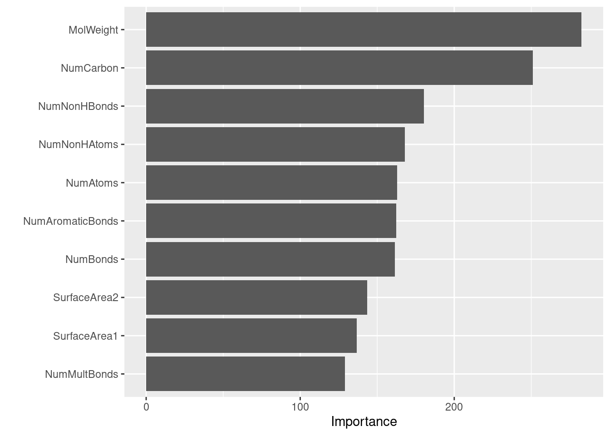
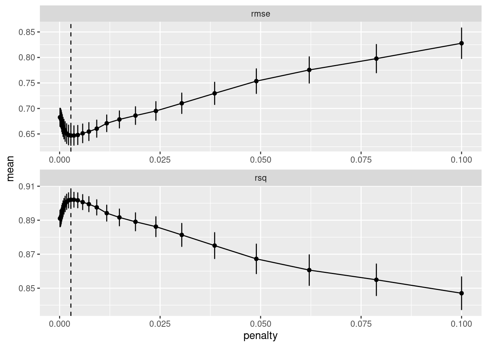

tidymodels 프레임 소개
R에는 데이터 과학에 사용되는 다양한 패키지가 존재하는데, 데이터 구조나 사용 방법이 패키지별로 각각의 원리에 의하여 파편화 되어 있다. 이를 통합하고 일관성 있는 사용자 경험을 제공하고, 예측 분석에 유용한 기능을 통합하려는 노력으로 caret 패키지가 개발되었다. 한편 데이터 과학에 유용한 패키지를 모아 공통적인 디자인 철학, 문법, 자료 구조를 공유하고자 tidyverse 패키지가 개발되었다. tidymodels 패키지는 caret의 목적을 tidyverse의 데이터 구조 및 함수형 데이터 처리 방식에 따르도록 새로이 개발한 것이다. 이 글에서는 tidymodels 프레임 내에세 회귀 분석을 수행하여 그 프레임의 구성을 엿볼 수 있도록 한다.
예측 분석 시나리오
지도 학습 문제를 받았다. 변수의 특성과 변수 사이의 관계는 분석이 끝날 때까지도 탐험해야 한다. 그 과정에 적절한 모델을 선택하고, 모델 변수를 선택하고, 대안 모델과 비교할 수 있어야 한다. 기계 학습 모델이 잘 작동하기 위해서는 변수를 적합히 변형시켜야 할 필요가 있다. 또한 기계 학습에서 쉽게 과적합될 수 있으므로 훈련데이터와 검정데이터를 잘 나눌 수 있어야 한다. 학습 모델의 성능을 평가해야 튜닝도 진행하고 모델 사이 비교도 가능할 것이다. 이런 일련에 과정에 필요한 기능을 tidymodels 패키지가 제공한다. 실제 데이터를 가지고 진행해보자.
solubility 데이터 셋
용해도 데이터는 AppliedPredictiveModeling 패키지의 것을 이용한다. 이미 학습 데이터와 검정 데이터가 나누어 져 있다. 응답 변수 solubility, FP로 시작하는 이산 변수와 그 외 특징 변수까지 모두 229개의 변수가 있고, 학습 데이터는 951개, 검정 데이터는 316개가 있다.
library(tidyverse)
library(tidymodels)
library(AppliedPredictiveModeling)
data(solubility)
sol_train <- as_tibble(solTrainX) %>%
mutate_if(~ str_detect(.x, "FP")[1], factor) %>% # binary vars with "FP"
mutate(solubility = solTrainY) %>%
relocate(solubility)
sol_test <- as_tibble(solTestX) %>%
mutate_if(~ str_detect(.x, "FP")[1], factor) %>% # binary vars with "FP"
mutate(solubility = solTestY) %>%
relocate(solubility)
# set.seed(952)
# sol_split <- initial_split(sol_train, strata = solubility)
# sol_train <- training(sol_split)
# sol_test <- testing(sol_split)데이터 전처리
sol_rec <- recipe(solubility ~ ., data = sol_train) %>%
step_BoxCox(all_predictors(), -all_nominal()) %>%
# step_dummy(all_nominal()) %>%
step_center(all_predictors()) %>%
step_scale(all_predictors())
sol_rec## Data Recipe
##
## Inputs:
##
## role #variables
## outcome 1
## predictor 228
##
## Operations:
##
## Box-Cox transformation on all_predictors(), -all_nominal()
## Centering for all_predictors()
## Scaling for all_predictors()tidyverser/tidymodels 패키지를 이용하면 코드 자체가 무엇을 하고 있는지 스스로 설명하게 된다. recipe에 formula를 사용하면 응답 변수와 특징 변수를 구분하여 등록할 수 있다. recipe 객체는 파이프 연산 %>%을 통하여 추가적인 전처리 연산을 추가할 수 있다. step_ 항으로 시작하는 함수가 전처리 함수이며, 특징 변수에만 BoxCox, center, scale 함수를 적용하였다.
랜덤 포레스트: ranger
tidymodels 패키지의 트리 회귀에서 랜덤 포레스트로 ranger 패키지를 쓸 수 있다. ranger 패키지는 기본 모델 변수만으로도 높은 성능을 보이는데, 심지어 변수의 변형 없이도, 또한 NA가 포함된 경우에도 회귀나 분류 작업을 수행할 수 있다. 큰 데이터 셋에 대해서는 계산량이 많이 필요하므로 고성능 작업을 위해 고안된 catboost 등 다른 패키지를 이용하는 것이 낫다. 다음 절차를 통하여 랜덤 포레스트로 회귀 분석을 수행하였다.
rf_mod <- rand_forest() %>%
set_engine("ranger", importance = "impurity") %>%
set_mode(mode = "regression")
rf_wf <- workflow() %>%
add_model(rf_mod) %>%
add_recipe(sol_rec)
rf_fit <- fit(rf_wf, data = sol_train)
rf_metric <- sol_test %>%
select(solubility) %>%
bind_cols(predict(rf_fit, new_data = sol_test)) %>%
metrics(truth = solubility, .pred)
rf_metric## # A tibble: 3 x 3
## .metric .estimator .estimate
## <chr> <chr> <dbl>
## 1 rmse standard 0.679
## 2 rsq standard 0.896
## 3 mae standard 0.489\(R^2\)가 0.89로 높게 나와 있다. 랜덤 포레스트를 이용한 경우 쉽게 vip(variable importance plots) 변수 중요도 그래프를 얻을 수 있다.
library(vip)##
## Attaching package: 'vip'## The following object is masked from 'package:utils':
##
## virf_fit %>%
pull_workflow_fit() %>%
vip()
FP로 시작하는 이항 변수는 중요도가 떨어지는 것을 알 수 있다.
단순 선형 회귀: lm
단순 선형 회귀로 모델 변수가 없는 lm을 수행해보자. 설명력에서 막강한 선형 회귀 모델은 여전히 휴효한 도구이다.
lm_mod <- linear_reg() %>%
set_engine("lm")
lm_wf <- workflow() %>%
add_model(lm_mod) %>%
add_recipe(sol_rec)
lm_fit <- fit(lm_wf, data = sol_train)
lm_pred <- predict(lm_fit, new_data = sol_test)
lm_metric <- lm_pred %>%
bind_cols(tibble(truth = solTestY)) %>%
metrics(truth = truth, .pred)
lm_metric## # A tibble: 3 x 3
## .metric .estimator .estimate
## <chr> <chr> <dbl>
## 1 rmse standard 0.770
## 2 rsq standard 0.864
## 3 mae standard 0.565ranger로 수행한 랜덤 포레스트보다 성능이 떨어지지만 이 문제의 경우 lm만으로도 많은 설명이 가능하다는 것을 확인할 수 있다. 몇 개의 계수를 살펴봐도 t값이 상당히 작아 제거 가능성이 있는 것을 확인할 수 있다. 선형 회귀에서 변수 선택을 가능하게 하는 것이 라소 회귀이며 다음 절에서 살펴보겠다.
head(tidy(lm_fit))## # A tibble: 6 x 5
## term estimate std.error statistic p.value
## <chr> <dbl> <dbl> <dbl> <dbl>
## 1 (Intercept) -2.72 0.0176 -155. 0
## 2 FP001 0.0784 0.147 0.533 0.594
## 3 FP002 -0.0124 0.130 -0.0958 0.924
## 4 FP003 -0.0172 0.0643 -0.267 0.789
## 5 FP004 -0.186 0.0649 -2.87 0.00421
## 6 FP005 -0.309 0.155 -2.00 0.0463라소 회귀: glmnet
glmnet는 내부적으로 교차검증 기능이 있으나 이 글에서는 tidymodels의 tune 패키지를 이용하겠다. 다음 코드에는 교차 검증을 위해서 vfold_cv를 이용하고 모델 변수 설정을 위하여 expand_grid를 활용하였다.
ll_mod <- linear_reg(penalty = tune(), mixture = 1) %>%
set_engine("glmnet")
ll_wf <- workflow() %>%
add_model(ll_mod) %>%
add_recipe(sol_rec)
ll_tune_grid <- expand_grid(penalty = 10^seq(-4, -1, length.out = 30))
set.seed(952)
folds <- vfold_cv(sol_train, v = 10)
ll_fit_rs <- ll_wf %>%
tune_grid(resample = folds,
grid = ll_tune_grid)##
## Attaching package: 'rlang'## The following objects are masked from 'package:purrr':
##
## %@%, as_function, flatten, flatten_chr, flatten_dbl, flatten_int,
## flatten_lgl, flatten_raw, invoke, list_along, modify, prepend,
## splice##
## Attaching package: 'vctrs'## The following object is masked from 'package:dplyr':
##
## data_frame## The following object is masked from 'package:tibble':
##
## data_frame## Loading required package: Matrix##
## Attaching package: 'Matrix'## The following objects are masked from 'package:tidyr':
##
## expand, pack, unpack## Loaded glmnet 4.0-2best_ll <- ll_fit_rs %>%
select_best("rmse")
ll_fit_rs %>%
collect_metrics() %>%
ggplot(aes(x = penalty, y = mean)) +
geom_point() +
geom_line() +
geom_vline(aes(xintercept = best_ll$penalty), lty = 2) +
geom_errorbar(aes(ymin = mean - std_err, ymax = mean + std_err)) +
facet_wrap(~ .metric, scales = "free", nrow = 2)
그래프의 penalty는 glmnet의 라그랑주 승스 \(\lambda\)를 의미한다. 점선으로 rmse기준으로 best 모델을 위한 penalty가 도시되어 있다. 보다 간결한 모델을 위해서는 select_by_pct_loss나 select_by_one_std_err 함수를 이용하여 추가 검토를 거쳐야 한다. 이 글에서는 간단하게 select_best를 이용하여 penalty를 결정하겠다. 적합 결과는 다음과 같다. \(R^2 = 0.876\)으로 단순 선형 회귀보다 근소한 우위를 보였다.
ll_fit <- ll_wf %>%
finalize_workflow(best_ll) %>%
fit(data = sol_train)
ll_metric <- sol_test %>%
select(solubility) %>%
bind_cols(predict(ll_fit, new_data = sol_test)) %>%
metrics(truth = solubility, .pred)
ll_metric## # A tibble: 3 x 3
## .metric .estimator .estimate
## <chr> <chr> <dbl>
## 1 rmse standard 0.731
## 2 rsq standard 0.876
## 3 mae standard 0.545glmnet 분석 결과로부터 단순 선형 회귀 모델에서 큰 t를 가졌던 변수가 일부 제거되어 있는 것을 확인할 수 있다.
tidy(ll_fit) %>%
filter(abs(estimate) > 1e-3) %>%
select(-penalty) %>%
head(n = 10)## # A tibble: 10 x 2
## term estimate
## <chr> <dbl>
## 1 (Intercept) -2.72
## 2 FP002 0.0368
## 3 FP003 -0.0332
## 4 FP004 -0.141
## 5 FP007 -0.0142
## 6 FP009 -0.0438
## 7 FP010 0.0181
## 8 FP011 0.00356
## 9 FP012 -0.0113
## 10 FP013 -0.110맺으며
이 글에서 살펴본 바와 같이 예측 분석을 위한 기계 학습 분야에서 tidymodels 패키지는 작업 흐름이 부드럽게 설계되어 있다. 전처리나 모델, 성능 측정 등 필요한 기능들이 조화롭게 녹아든다. 탐색적 데이터 분석으로부터 예측 모델 수립에까지 자연스러운 흐름을 만들수 있다. tidymodels를 활용하면 작업 흐름이 코드에 잘 나타나게 되어 코드 자체가 훌륭한 향후 작업에 참고 문서가 되는 장점이 있다.
최근 tidymodels 패키지와 같이 tidyverse에 영향을 받는 패키지가 많이 등장하고 있다. tidyquant 패키지와 같은 것이 대표적이다. tidy* 패키지들을 통하여 R의 넓은 생태계를 보다 쉽게 탐험해 볼 수 있을 것이다.
참고
[1] 막스 쿤, 키엘 존슨, 권정민 역, 실전 예측 분석 모델링, Springer/에이콘, 2018